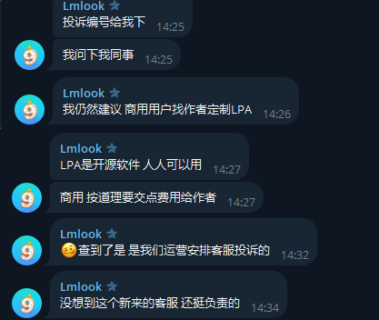
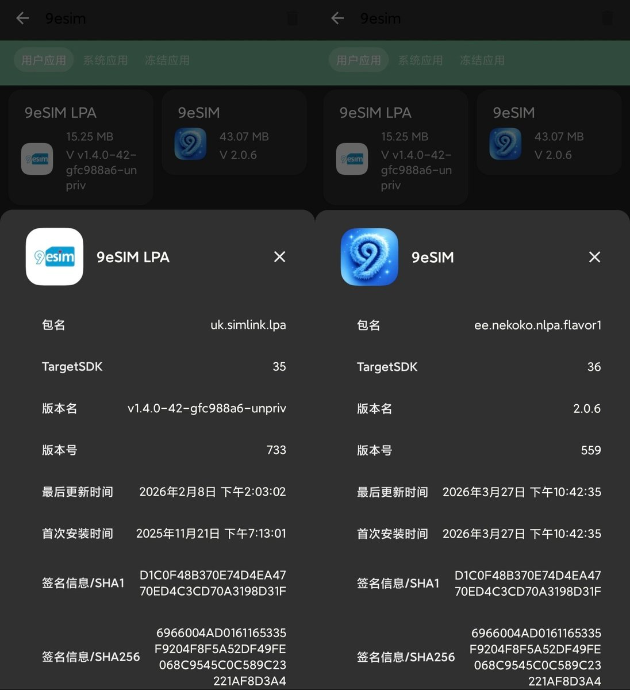
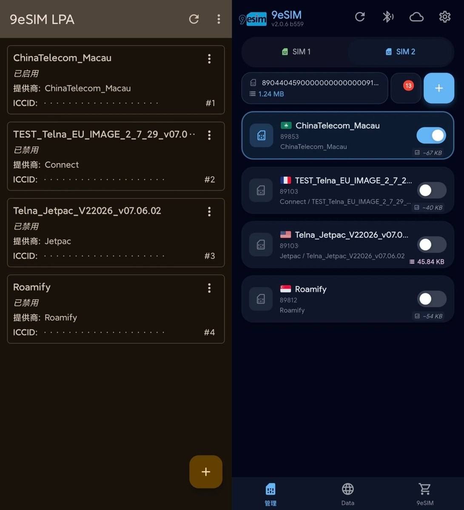
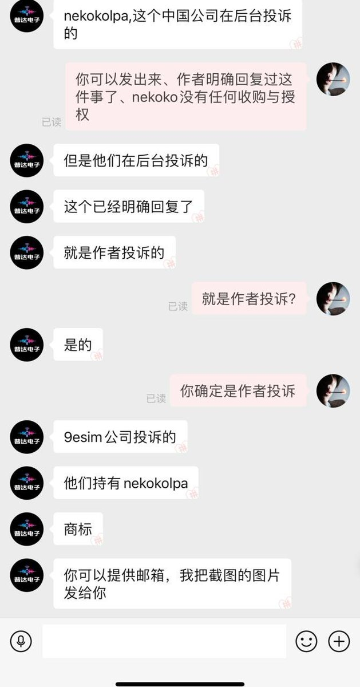
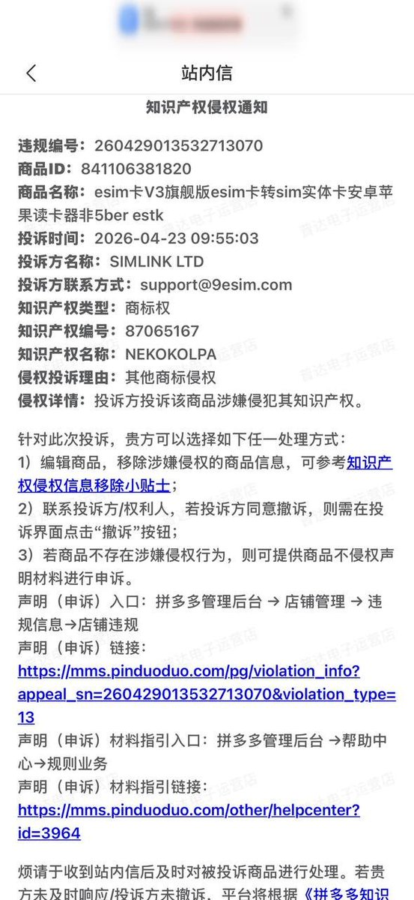

NekokoLPA 一直是开源软件，即使是 eSTKme 也可以在 STK 菜单中添加 NekokoLPA 提供的 ARA-M 实现管理，并没有做所谓的 EID 白名单限制特定厂商的卡才能写
而 9eSIM 找作者 @CyberHono 定制，除 NekokoLPA 定制外，NekokoLPA2 的应用名称也叫 9eSIM
本身是给了钱才可以商用，反观 pdd 卖小白卡的商家一分钱都没给就商用，还使用“v3卡”、“5ber estk”等关键词擦边，将售后问题推给 NekokoLPA 开发者

而 9eSIM 找作者 @CyberHono 定制，除 NekokoLPA 定制外，NekokoLPA2 的应用名称也叫 9eSIM
本身是给了钱才可以商用，反观 pdd 卖小白卡的商家一分钱都没给就商用，还使用“v3卡”、“5ber estk”等关键词擦边，将售后问题推给 NekokoLPA 开发者





昨日后续，NekokoLPA作者已经澄清没有任何授权
被投诉店家反馈，是9esim使用NekokoLPA商标进行投诉的。
这里更让人疑惑的不是nkk和9esim的联系
而是9eSIM投诉侵权后对店家的处罚措施：
1.如果9eSIM和小白卡版权纠纷，那应该是要求小白卡商家下架 https://t.co/7FEuwr0Wss https://t.co/eY1IsFtcVl
被投诉店家反馈，是9esim使用NekokoLPA商标进行投诉的。
这里更让人疑惑的不是nkk和9esim的联系
而是9eSIM投诉侵权后对店家的处罚措施：
1.如果9eSIM和小白卡版权纠纷，那应该是要求小白卡商家下架 https://t.co/7FEuwr0Wss https://t.co/eY1IsFtcVl